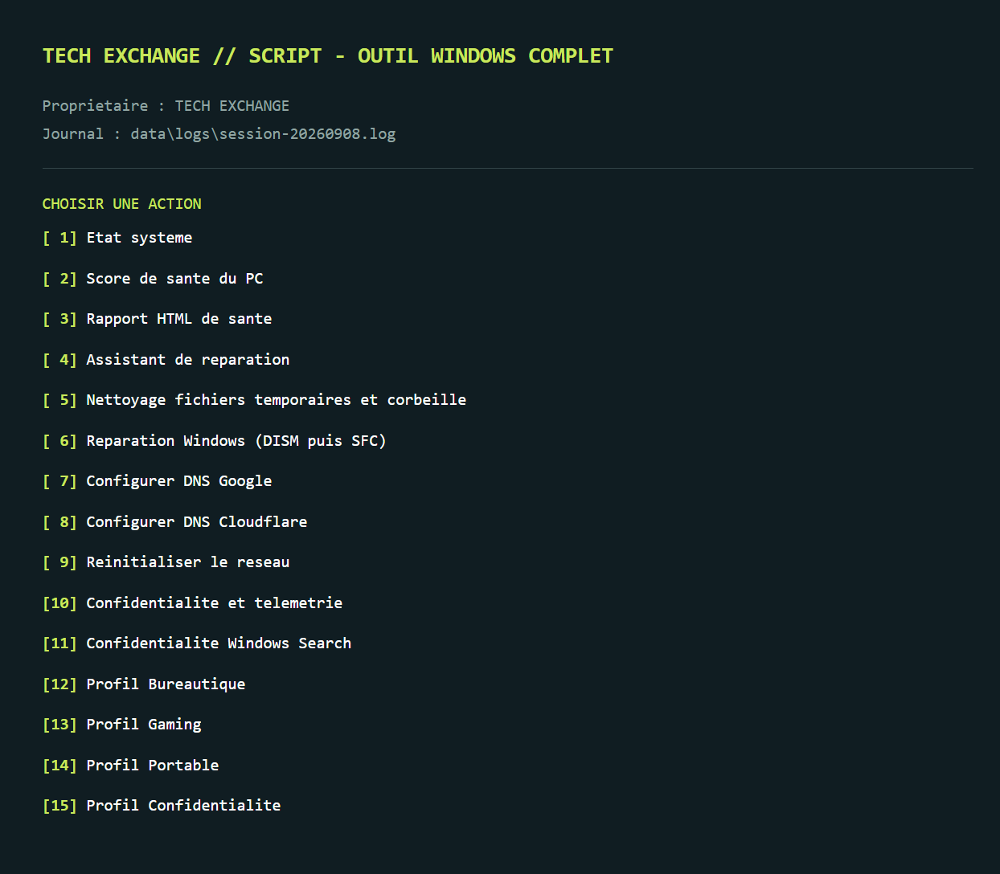
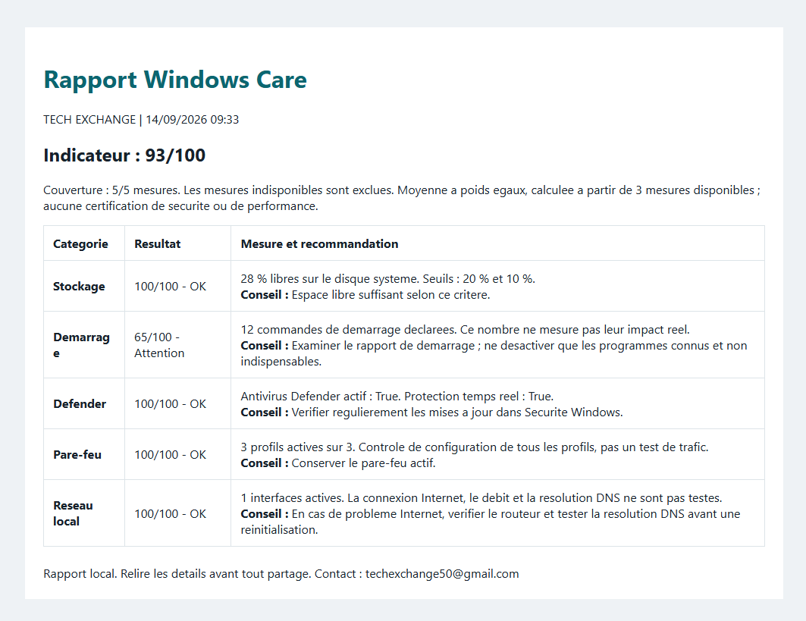

Outils utiles
Des logiciels conçus autour de problèmes réels, avec une interface compréhensible et des actions concrètes.

Windows Care / outil local
Windows Care est un centre local de diagnostic, réparation et optimisation pour Windows 10 et Windows 11, créé et développé par TECH EXCHANGE.
Des logiciels conçus autour de problèmes réels, avec une interface compréhensible et des actions concrètes.
Des expériences numériques pensées pour répondre à un besoin précis, du concept jusqu’à la mise en ligne.
Des solutions développées avec attention, documentation et contrôle des données utilisées.
Chaque projet peut grandir avec ses utilisateurs grâce à une base claire et maintenable.
Les réglages de confidentialité, DNS et alimentation sont sauvegardés avant modification. Les limites de restauration des nettoyages et réparations sont expliquées dans le guide. Le mode simulation permet d’explorer avant d’agir.


Premier produit disponible
Décompressez l’archive, lancez SCRIPT_TOOL.bat et commencez par le mode simulation. Les diagnostics restent accessibles sans droits administrateur ; Windows demande l’élévation avant les actions système.
Produit développé par TECH EXCHANGE
+241 77 17 14 32 · techexchange50@gmail.com
Extrayez tous les fichiers du ZIP dans un même dossier.
Lancez le BAT avec -DryRun pour découvrir les parcours sans modifier Windows.
Lisez le résultat et les limites avant d’autoriser une action système.
Une plateforme indépendante de développement de solutions numériques, créée et développée par son fondateur.
Le fondateur de TECH EXCHANGE est développeur et créateur de la plateforme, à l’origine de la conception et du développement des solutions.
Windows Care, un outil local de diagnostic, maintenance et optimisation pour Windows 10 et Windows 11.
Contactez TECH EXCHANGE pour discuter d’une idée, d’un outil ou d’une solution numérique sur mesure.